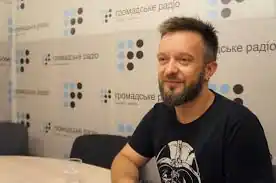

Павло Ар'є — псевдонім українсько-німецького драматурга (справжнє ім'я — Алєксєєв Павло Валентинович). Прославився завдяки написанню п'єси "На початку і наприкінці часів" (2013) та появи низки успішних вистав на основі неї, які стали культовими серед українських глядачів. П'єси Ар'є перекладені зокрема словенською, чеською, німецькою, англійською, польською, французькою мовами.
Народився 16 жовтня 1977 року у Львові. 1998 року закінчив Українську академію друкарства у Львові. Згодом навчався в Київському університеті у 2000—2004 роках за спеціальністю "соціологія". Після в інтерв'ю згадував, що у минулому отримав диплом за спеціальністю "економіст", але згодом зрозумів що "з бізнес-людьми він працювати не хоче" та вирішив спробувати себе у драматургії.
2004 року переїхав жити та навчатися до Кельна, де закінчив університет. Жити до Львова Ар'є повернувся у 2016 році та став художнім керівником Львівського драматичного театру ім. Лесі Українки. Посаду залишив у 2017 році.